Je suis Serkan Atmaca
Développeur Fullstack
Voir mon cv
Voir mes projets
Voir mon cv
Voir mes projets
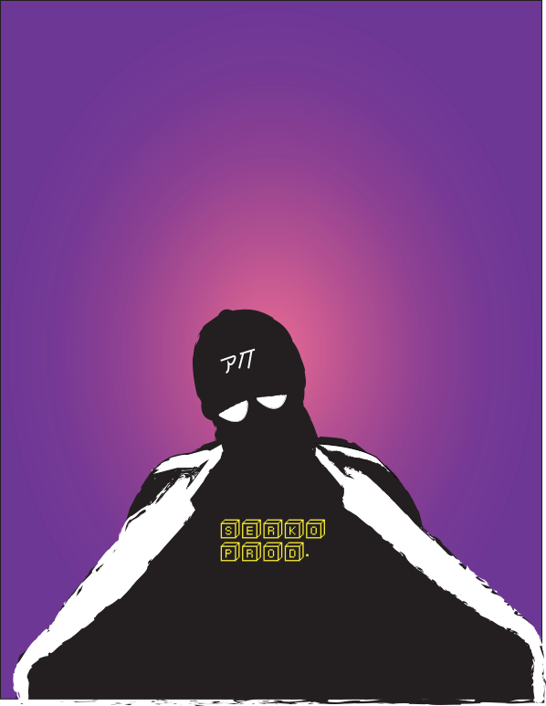
Moi c'est Serkan, développeur fullstack diplômé d'un Master Informatique et Big Data à l'Université Paris 8. Passionné par la programmation, j'aime concevoir des projets de bout en bout, du front-end à la data.
HTML/CSS, JavaScript, React, Vue.js, React Native
Python (FastAPI), Node.js, API REST, PHP (Laravel), C# (WinForms)
SQL, MySQL, PostgreSQL
Git, CI/CD (Jenkins), Docker, Kubernetes, Jira
Machine Learning, Deep Learning, pandas, scikit-learn, PyTorch, Databricks, OR-Tools
Français, Anglais (courant), Turc
Stage · mars – sept. 2026
Stage · mars – août 2025
CDD · mai – août 2024
Stage · août – oct. 2023
Stage · janv. – mars 2022
Stage · juin 2021
2024 – 2026 · Diplômé
2022 – 2023
2020 – 2022
2020
freeCodeCamp.org
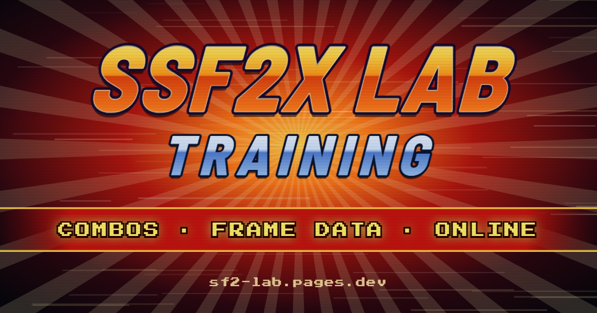
SSF2X LAB est un trainer lab pour le jeu Street Fighter 2. Le projet permet de pouvoir s'entrainer, centraliser les informations de ce jeu et pouvoir jouer en ligne.
Technologies utilisées : JavaScript, WebAssembly.
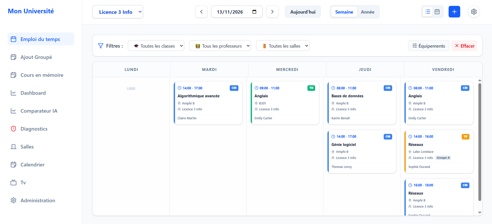
Application web réalisée en stage au laboratoire de Paris 8 : elle génère automatiquement les emplois du temps universitaires, sans aucun conflit de salle, d'enseignant ou de groupe.
Technologies utilisées : React (TypeScript), FastAPI, PostgreSQL, OR-Tools (CP-SAT).
IAS est une plateforme spécialisée dans la vérification et l'optimisation de la publicité digitale. Cliquez sur le bouton pour voir mon projet de stage.
Technologies utilisées : FastApi,Vue.js, CI/CD (Docker, K8s, Jenkins...).
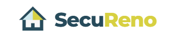
SecuReno est un site vitrine spécialisé dans la serrurerie et la menuiserie extérieure.
Technologies utilisées : HTML, CSS, PHP, Tailwind.
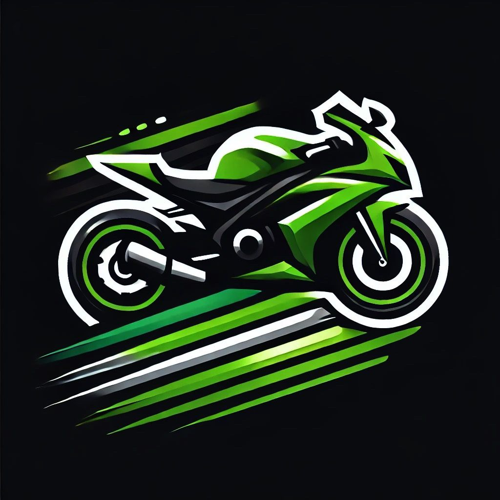
FastBike Californie est un site vitrine d'un garage moto à Nice.
Technologies utilisées : HTML, CSS, PHP, Tailwind.
Monquitus est un service en ligne pour recevoir un quitus fiscal.
Technologies utilisées : HTML, CSS, PHP, Bootstrap.
StartMySite est une plateforme dédiée à la création de sites vitrine et e-commerce, pensée pour faciliter la mise en ligne rapide et professionnelle.
Technologies utilisées : HTML, CSS, PHP, Bootstrap.
I-Intérim est une agence d’intérim. J’ai eu l’opportunité de repenser et développer leur site internet afin d’améliorer leur visibilité et l’expérience utilisateur.
Technologies : React JS Node.js, Tailwind.
Pokémon Search App est un site permettant de consulter les statistiques d'un Pokémon via une API, le tout avec un design rétro.
Technologies : HTML/CSS, JavaScript, Tailwind.
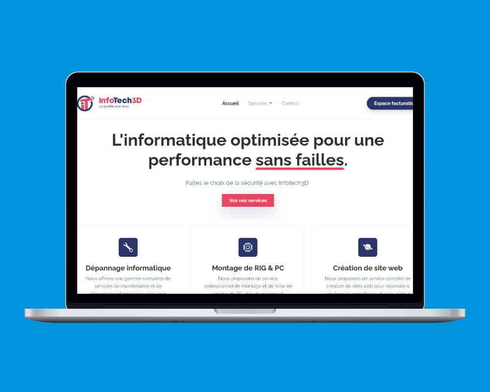
Le site d'InfoTech3D propose un site pour découvrir ses services et régler facilement les factures en ligne.
Technologies : HTML/CSS, PHP, JavaScript, Node.js,
SQL, Bootstrap etc.
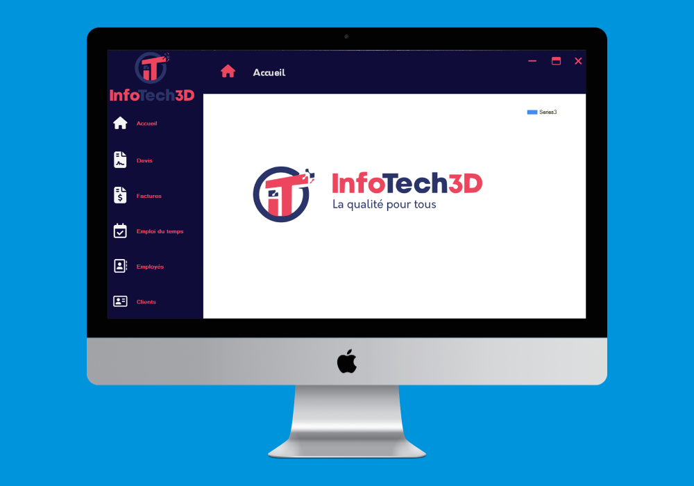
Un logiciel permettant de générer des devis et factures, organiser le planning de ses employés.
Technologies : C#, SQL
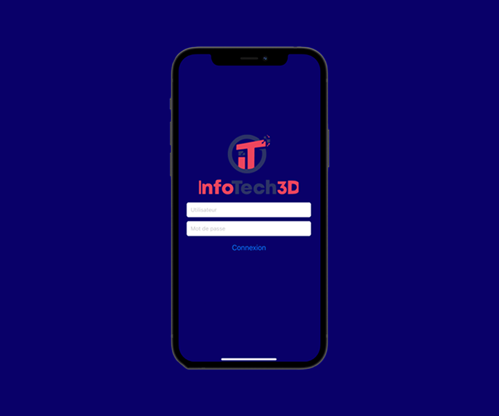
Une application permettant aux employés d'InfoTech3D de consulter leurs emploi du temps
Technologies : React Native, SQL, Express etc.
SSF2X LAB est un trainer lab pour le jeu Street Fighter 2. Le projet permet de pouvoir s'entrainer, centraliser les informations de ce jeu et pouvoir jouer en ligne.
Technologies utilisées : JavaScript, WebAssembly.
Application web réalisée en stage au laboratoire de Paris 8 : elle génère automatiquement les emplois du temps universitaires, sans aucun conflit de salle, d'enseignant ou de groupe.
Technologies utilisées : React (TypeScript), FastAPI, PostgreSQL, OR-Tools (CP-SAT).
IAS est une plateforme spécialisée dans la vérification et l'optimisation de la publicité digitale. Cliquez sur le bouton pour voir mon projet de stage.
Technologies utilisées : FastApi,Vue.js, CI/CD (Docker, K8s, Jenkins...).
SecuReno est un site vitrine spécialisé dans la serrurerie et la menuiserie extérieure.
Technologies utilisées : HTML, CSS, PHP, Tailwind.
FastBike Californie est un site vitrine d'un garage moto à Nice.
Technologies utilisées : HTML, CSS, PHP, Tailwind.
Monquitus est un service en ligne pour recevoir un quitus fiscal.
Technologies utilisées : HTML, CSS, PHP, Bootstrap.
StartMySite est une plateforme dédiée à la création de sites vitrine et e-commerce, pensée pour faciliter la mise en ligne rapide et professionnelle.
Technologies utilisées : HTML, CSS, PHP, Bootstrap.
I-Intérim est une agence d’intérim. J’ai eu l’opportunité de repenser et développer leur site internet afin d’améliorer leur visibilité et l’expérience utilisateur.
Technologies : React JS Node.js, Tailwind.
Pokémon Search App est un site permettant de consulter les statistiques d'un Pokémon via une API, le tout avec un design rétro.
Technologies : HTML/CSS, JavaScript, Tailwind.
Le site d'InfoTech3D propose un site pour découvrir ses services et régler facilement les factures en ligne.
Technologies : HTML/CSS, PHP, JavaScript, Node.js,
SQL, Bootstrap etc.
Un site internet (non fini) pour mon stage de bts, chef d'équipe d'un groupe de 3.
Technologies : HTML/CSS, PHP, SQL, Bootstrap
Jeu de combat, toujours en développement
Technologies : JavaScript, Framework (Phaser.js)
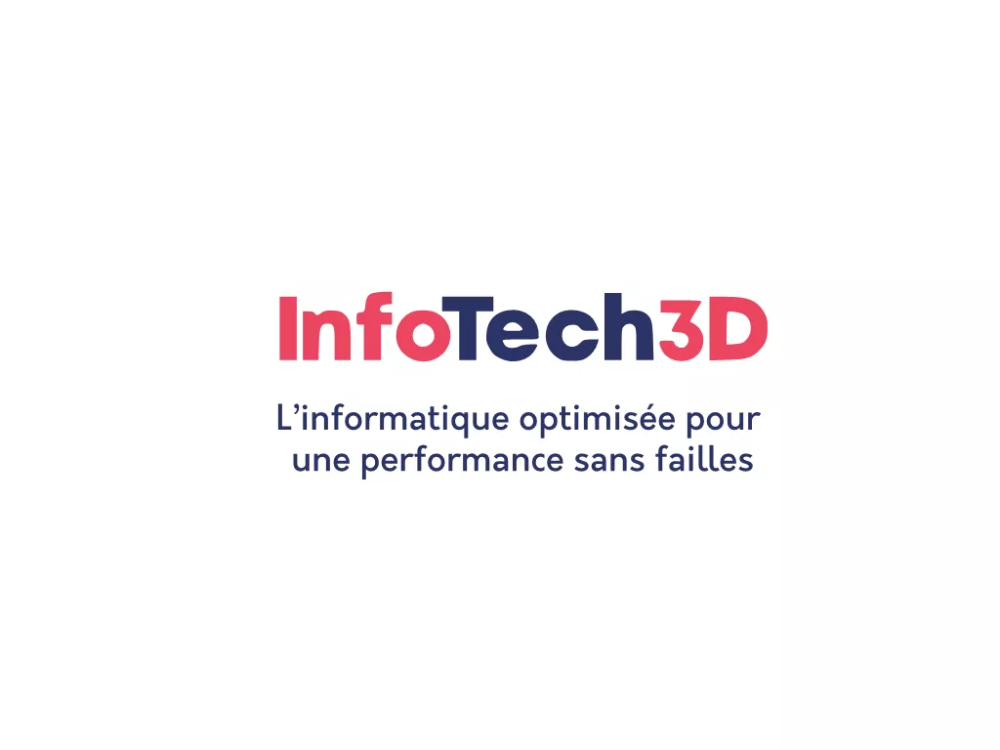
Une application permettant aux employés d'InfoTech3D de consulter leurs emploi du temps
Technologies : React Native, SQL, Express etc.
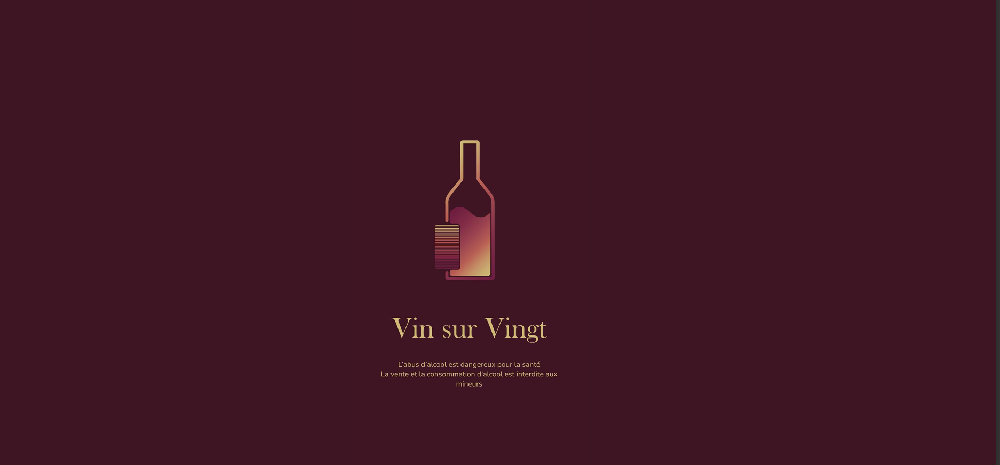
Une application de dégustation de vin. Scannez le code-barres de la bouteille pour des conseils de dégustation.
Technologies Used : React Native, Express, Node.js,
MongoDB etc.
Un logiciel permettant de générer des devis et factures, organiser le planning de ses employés.
Technologies : C#, SQL
Steam FA simplifie l'accès à vos comptes Steam en enregistrant les informations pour une connexion rapide.
Technologies Used : Python, Json, Tkinter
Voir +